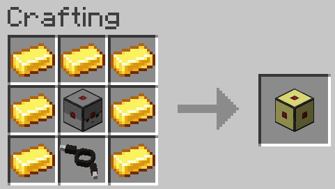

CC: Wired Connector
CC: Wired Connector is a simple NeoForge addon for CC: Tweaked and Drive-By-Wire-Sable that adds a compatibility block for those two mods.
Content
This mod only adds one block: the Wired Connector. This block is a CC peripheral that allows the use of Drive-By-Wire channels with CC: Tweaked and works like any other DBW compatible block. Right-click the connector, select your channel and right-click the block to which you want to output a signal with this channel. You don't need to struggle with redstone relays and make absolutely non-compact designs for your contraptions. It can be crafter with the following recipe:

Wired Connector Methods
Those methods are inspired by the CC built-in redstone library to make them easy to use.
| Method name | Utility | Parameters |
|---|---|---|
| setOutput(channel, on) | Turn the signal of a specific channel on or off. | int channel: The desired channel number bool on: Whether to turn on or off the signal |
| getOutput(channel) | Get the current output of a specific channel. | int channel: The desired channel number |
| setAnalogOutput(channel, value) | Set the signal strength for a specific channel. | int channel: The desired channel number int value: The signal strength to output |
| getAnalogOutput(channel) | Get the current output strength for a specific channel | int channel: The desired channel number |
Requirements
- Minecraft 1.21.1
- NeoForge 21.1.233
- Drive-By-Wire-With-Sable 0.3.0
- CC: Tweaked 1.120.0
- Create 6.0.10+ (DBW dependency)
- Sable 2.0.3 (DBW dependency)
Incompatible mods
No incompatible mods has been found for now.
If you ever find an incompatible mod, please let me know by opening an issue.